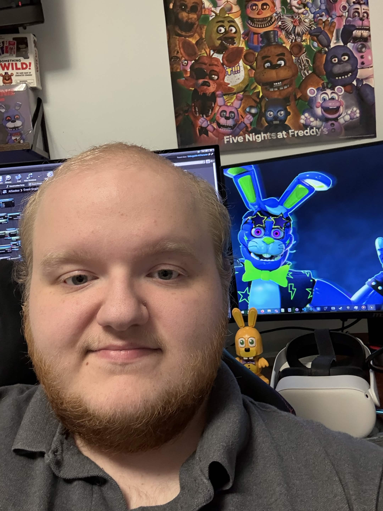

Hello! Welcome to my portfolio!
Here you will find all of the work I have done and projects I have helped on.
I'm currently a Junior in college seeking a degree in Computer Science and a Minor in Media Arts.
I enjoy creating mods for video games in my free time and learning new tricks within Unreal Engine.
Ever since the first game of Five Nights at Freddy's came out, I have been all over it. It has been my ride or die franchise.
As I have gotten older, I have mostly shifted my focus from playing the games to understanding how they work. What makes them tick?
I get lost in the nitty gritty details while playing them thinking to myself "I bet they used a box collider pull that off" for example.
Alongside that, I've also found I am super into audio engineering. I'll dig into a game for that reason too: to hear the individual sounds by themselves.
I love figuring out how my favorite games work, making small changes to them, and being able to release that change out to the public to enjoy.